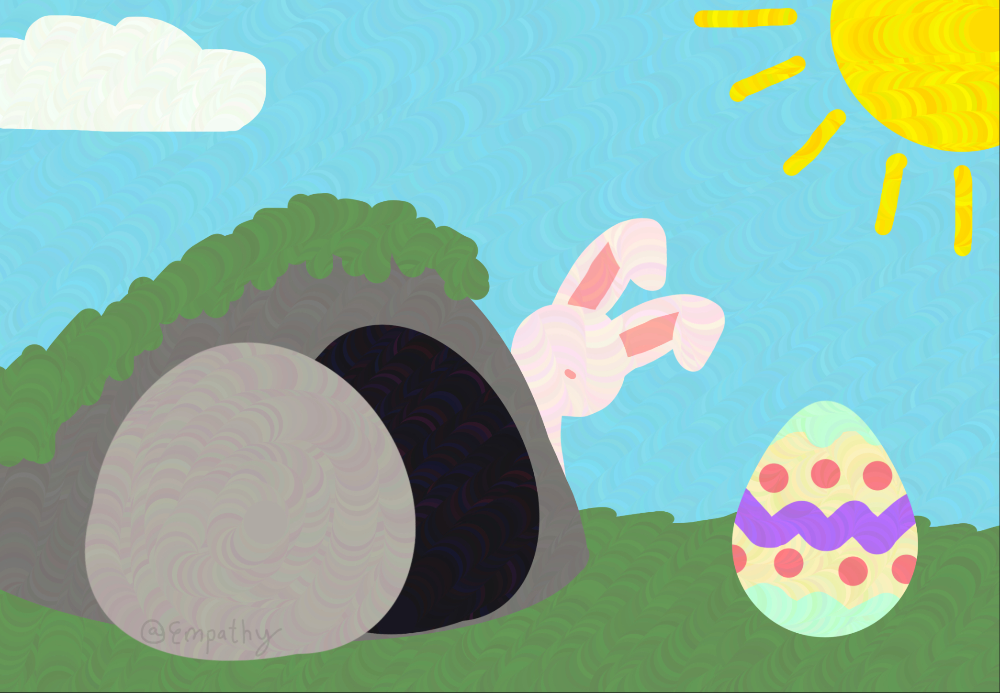

Easter Resurection Rolls
A Jordan family Easter tradition, symbolic of the ressurection of Christ.
Ingredients
- Marshmallows (medium is best)
- A small bowl of melted butter
- Cinamon
- White granulated sugar
- Crescent Dough croissant sheet (like from the Pillsbury Doughboy)
Step 1
Wash your hands, then gather all your ingredients together and preheat the oven to 350°.
Step 2
Melt a small bowl of butter, and mix your cinnamon and sugar in equal amounts into a separate small bowl. Mix thoroughly. Take your dough triangles and lay them out on a cookie sheet.
Step 3
Take one marshmallow and roll it around in the butter until it’s fully coated.
Step 4
Take the buttered marshmallow and roll it around in the cinnamon sugar mix until fully coated.
Step 5
Take the marshmallow and wrap it up in the dough triangles. Make sure the marshmallow is fully sealed in, and there aren’t any holes or gaps. Optionally, also lightly brush the outside of the dough with butter, cinnamon, and sugar.
Step 6
Bake as long as the dough crescent box recommends. Then remove, let cool to a comfortable temperature, and enjoy.
The Story & symbolism
The story and symbolism is very simple. The marshmallow represents the body of Jesus Christ, wrapped in burial cloth. The butter, cinnamon, and sugar represent the oils and spices used to prepare his body for burial, and the dough is the tomb. The oven represents the time Jesus spent in hell before ascending. When you bite into the roll at the end, the marshmallow has melted completely to coat the inside of the roll, leaving it hollow and seemingly empty, just like the empty tomb found by the women Easter morning. Your marshmallow Jesus has ascended to sugary heaven– your belly!
